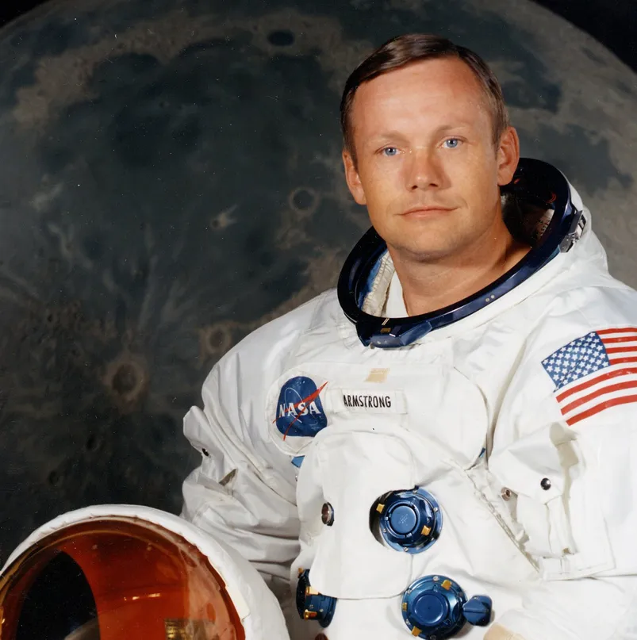

« C'est un petit pas pour l'homme, un bond de géant pour l'humanité. »
— Neil Armstrong, 1969

Contexte historique
La course à l’espace est l’un des épisodes les plus marquants de la guerre froide. Initiée dans les années 1950, elle oppose principalement les États-Unis et l’Union soviétique dans une compétition technologique et idéologique. Tout commence en 1957, lorsque l’URSS surprend le monde en lançant Spoutnik 1, le tout premier satellite artificiel en orbite terrestre. Cet événement provoque une onde de choc à l’échelle mondiale et pousse les États-Unis à créer la NASA en 1958.
La rivalité s’intensifie dans les années suivantes : l’URSS envoie le premier homme dans l’espace, Youri Gagarine, en 1961, mais les États-Unis ripostent avec les missions Mercury puis Gemini. L’objectif devient clair : atteindre la Lune. En 1969, les Américains réussissent l’exploit avec la mission Apollo 11. Neil Armstrong et Buzz Aldrin posent le pied sur la Lune, marquant la fin symbolique de cette course. Cette période est aussi celle d’avancées majeures en matière de science, d’ingénierie et de communication.
Au-delà de la compétition, la course à l’espace a posé les bases de l’exploration spatiale moderne. Elle a fait naître un nouvel imaginaire collectif et permis à l’humanité d’envisager des projets communs au-delà des frontières terrestres.
Couverture de Time Magazine, décembre 1968 - Apollo 11 - Course à l'espace
Les grands acteurs
Les États-Unis
Logo de la NASA
Les États-Unis, à travers la NASA (National Aeronautics and Space Administration), ont été les pionniers
de nombreuses avancées spatiales. Leur programme Apollo a abouti à l'alunissage historique de Neil Armstrong
en 1969. Outre la conquête lunaire, les États-Unis ont développé des satellites, des navettes spatiales
comme Atlantis et Discovery, ainsi que le télescope spatial Hubble, qui a révolutionné l’observation de l’univers.
L’Union Soviétique
Logo de Roscosmos
L’Union Soviétique fut le premier pays à envoyer un satellite artificiel, Spoutnik, en orbite en 1957, marquant
le début de la course à l’espace. Elle fut aussi la première à envoyer un homme dans l’espace, Youri Gagarine,
en 1961. Le programme spatial soviétique était à la fois ambitieux et secret, et a permis de nombreuses premières
historiques dans l’exploration spatiale.
Missions emblématiques de la course à l’espace
Les missions spatiales emblématiques, telles qu'Apollo 11, Spoutnik 1, et Vostok 1, ont marqué des tournants
majeurs dans l'exploration de l'espace. En 1969, la mission Apollo 11 a permis à l'astronaute américain Neil Armstrong
de poser le pied sur la Lune, un événement historique qui a symbolisé la victoire des États-Unis dans la course à l'espace.
L'Union Soviétique, quant à elle, a lancé le premier satellite, Spoutnik 1, en 1957, lançant officiellement la guerre
technologique entre les deux nations. La mission Vostok 1, avec Youri Gagarine, fut également un jalon essentiel,
car elle marqua la première fois qu'un être humain était envoyé dans l'espace, en 1961.